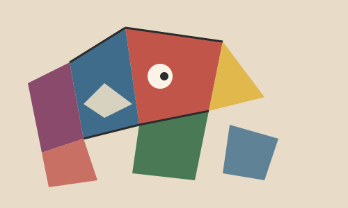

About the Artist

Pablo Picasso (1881–1973) was a Spanish painter, sculptor, printmaker, and ceramicist who spent most of his adult life in France. He is considered one of the most influential artists of the 20th century.
Born in Málaga, Spain, Picasso was a child prodigy — art historians say his father, also a painter, gave Picasso his own brushes and palette after seeing how talented his son already was.
Cubism & Key Works
Picasso moved through several distinct styles over his career, including his Blue Period (1901–1904) and Rose Period (1904–1906). Around 1907, he and fellow artist Georges Braque co-founded Cubism, a revolutionary style that showed multiple angles of a subject at once on a single flat canvas.
His most famous work, Guernica (1937), is a massive black, white, and gray painting created in response to the bombing of the town of Guernica during the Spanish Civil War. It remains one of the most powerful anti-war paintings in history.
Where to See Them
Picasso's work is held in major museums across Spain, France, and the United States. Here are a few:
| Museum | City |
|---|---|
| Museo Reina Sofía | Madrid, Spain |
| Museu Picasso | Barcelona, Spain |
| Museo Picasso Málaga | Málaga, Spain |
| Musée National Picasso-Paris | Paris, France |
| Museum of Modern Art (MoMA) | New York, USA |
Fun Facts
- Picasso is estimated to have created around 50,000 artworks over his lifetime, including paintings, sculptures, ceramics, and prints.
- He co-founded Cubism with his friend and fellow painter Georges Braque around 1907.
- Picasso and Braque are also credited with pioneering collage as an artistic technique.
- His painting Guernica is over 25 feet wide and was reportedly completed in about a month.
- Picasso kept painting, sculpting, and creating right up until his death at age 91 in 1973.
Learn More
Want to explore further? Check out these resources: